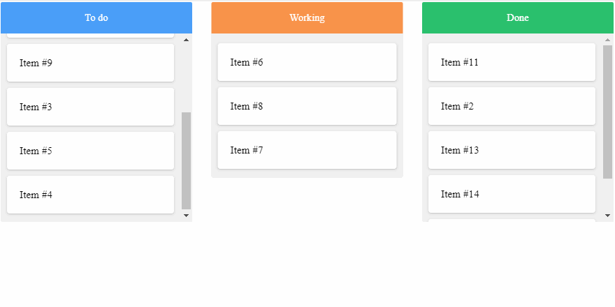

What is Kanban Board ?
The Kanban board is a tool for workflow visualization, designed to help you bring clarity to your work
process and enhance efficiency by limiting work in progress.
With this new level of transparency, you will quickly identify problematic work stages, and by
improving those, your team will soon work more efficiently.